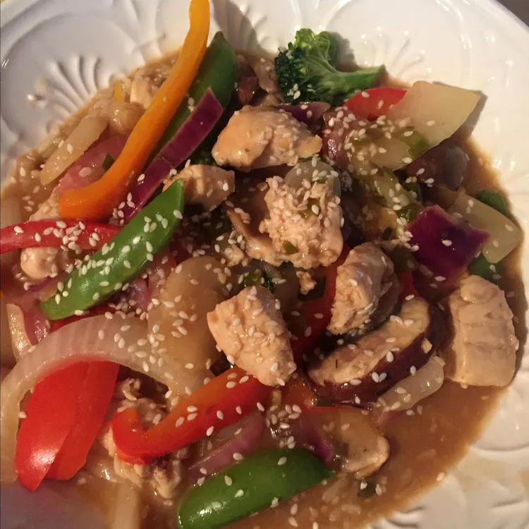

Strips of skinless chicken breast stir it up with garlic, ginger, and tons of crunchy vegetables, including sliced cabbage, red bell pepper, and sugar snap peas. Toss it with a lightly sweetened soy sauce, and dinner's ready! "This was great because it is so healthy and yet very flavorful," says betsyjane. Gwen adds, "This is delicious, no matter what vegetables I use."
2 tablespoons peanut oil
6 cloves garlic, minced
1 teaspoon grated fresh ginger
1 bunch green onions, chopped
1 teaspoon salt
1 pound boneless skinless chicken breasts, cut into strips
2 onions, thinly sliced
1 cup sliced cabbage
1 red bell pepper, thinly sliced
2 cups sugar snap peas
1 cup chicken broth
2 tablespoons soy sauce
2 tablespoons white sugar
2 tablespoons cornstarch
Heat peanut oil in a wok or large skillet. When oil begins to smoke, quickly stir in 2 cloves minced garlic, ginger root, green onions and salt. Stir fry until onion becomes translucent, about 2 minutes. Add chicken and stir until opaque, about 3 minutes. Add remaining 4 cloves minced garlic and stir. Add sweet onions, cabbage, bell pepper, peas and 1/2 cup of the broth/water and cover.
In a small bowl, mix the remaining 1/2 cup broth/water, soy sauce, sugar and cornstarch. Add sauce mixture to wok/skillet and stir until chicken and vegetables are coated with the thickened sauce. Serve immediately, over hot rice if desired.
